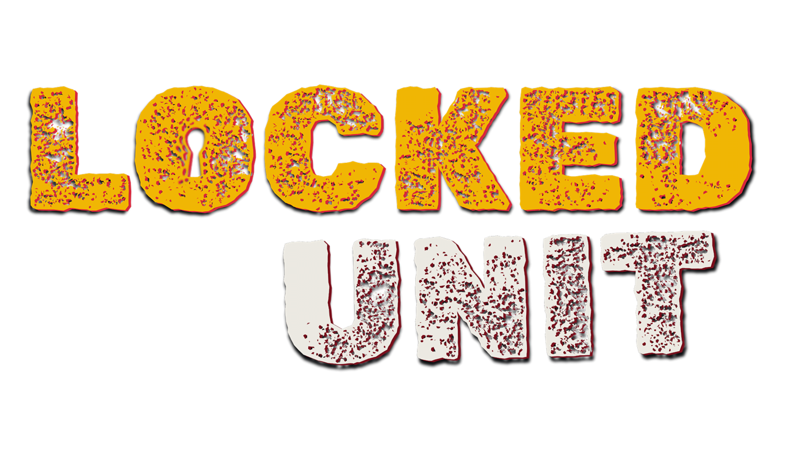

PRESS KIT
Informações oficiais, ficha técnica, textos prontos para matéria com botão de cópia rápida e ativos visuais em alta resolução para jornalistas, criadores de conteúdo e pesquisadores acadêmicos.
Ficha Técnica
Especificações cadastrais de Locked Unit e da desenvolvedora Pingado Studios.
| Título do Jogo | Locked Unit: Escape Room Horror |
|---|---|
| Desenvolvedora | Pingado Studios (Centro Universitário Senac Santo Amaro) |
| Plataforma de Lançamento | PC (Windows 10/11 - 64 bits) |
| Motor de Desenvolvimento | Unity 6 (6000.4.0f1) Universal Render Pipeline (URP) |
| Gênero | Escape Room Horror / Suspense Psicológico em Primeira Pessoa |
| Classificação Indicativa | 16 ANOS (Violência psicológica, confinamento claustrofóbico e linguagem informal com tensão) |
| Duração Estimada | Aproximadamente 30 minutos (Vertical Slice com 2 Fases completas) |
| Idioma | Português do Brasil (Dublagem integral de rádio, textos diegéticos e legendas) |
| Contato para Imprensa | pingadostudios@gmail.com |
Sinopses & Textos de Divulgação
Clique no botão "Copiar Texto" para obter o release formatado na sua área de transferência.
Um escape room de horror em primeira pessoa onde uma universitária precisa desvendar os segredos de um depósito de containers antes que 30 minutos se esgotem — enquanto é vigiada por um patrulheiro implacável.
Em Locked Unit, você acorda presa em um depósito industrial após uma festa universitária. Sem armas para lutar, seu único caminho é explorar containers escuros, inspecionar pistas em 3D e decifrar enigmas sob um cronômetro implacável de 30 minutos, enquanto foge da perseguição do guarda Augustinho.
Locked Unit é uma experiência curta e intensa de Escape Room Horror desenvolvida pela Pingado Studios no Senac Santo Amaro. Assumindo o papel de Maria, a jogadora desperta desorientada em um complexo de containers preparado meticulosamente pelo sequestrador Lucas, um colega de faculdade obcecado por ela. Para escapar viva, Maria deve conectar fragmentos da festa da noite anterior deixados no pátio, inspecionar itens em 3D em 360 graus, abrir um cofre digital e superar um desafio rítmico de memória e vigilância contra o segurança Augustinho. O projeto destaca-se por sua identidade urbana brasileira, mecânicas táteis de Game Juice, atmosfera de suspense sem combate e um conjunto integral de acessibilidade que inclui modos contra cinetose, fotossensibilidade e calibração de luminosidade.
"Queríamos provar que é possível criar um jogo de terror claustrofóbico e tenso sem recorrer a sustos vazios ou armas de fogo. Em Locked Unit, o medo vem da vulnerabilidade de Maria e do relógio correndo contra o jogador. Cada pista da noite anterior que você gira nas mãos conta uma parte dessa história desconfortável." — Larissa Kimie e Helen Alves, desenvolvedoras da Pingado Studios.
Pontos de Destaque
Características singulares do projeto para pautas e avaliações.
Horror Sem Combate
A sobrevivência depende 100% de dedução lógica, furtividade e gestão da linha de visão do patrulheiro.
Pressão Real de 30 Minutos
O cronômetro corre de maneira contínua no HUD, alterando a intensidade da trilha sonora e o comportamento da luz.
Cultura Universitária Paulista
Cenários, gírias e objetos diegéticos inspirados nas repúblicas estudantis e noites universitárias de Campinas e São Paulo.
Acessibilidade Nativa
Modo Câmera Confortável anti-cinetose, desativação de granulação e aberração cromática, slider de FOV amplo e calibrador EV.
Galeria de Ativos & Downloads
Arquivos originais para uso em matérias jornalísticas e posts de divulgação.


Logo Locked Unit
Versão oficial de título • Tipografia Rubik Dirt • PNG
Baixar Arquivo PNG ↓
Key Art Oficial
Pôster principal com Maria e o pátio de containers
Upload via CMS AdminDiretrizes de Marca
Instruções para preservar a legibilidade e a integridade dos logotipos.
Zona de Respiro
Mantenha uma margem mínima equivalente a 50% da altura do símbolo do copo de café em torno do logo em qualquer aplicação.
Fundos Permitidos
Aplicar prioritariamente sobre fundos escuros (#0A0D12, #141922). Para fundos claros, utilizar a versão monocromática preta.
Proibições
Não distorça a proporção das letras, não altere as cores oficiais (#F01A12, #F0B604) e não aplique sombras coloridas que prejudiquem a silhueta.
Equipe do Projeto
Contatos diretos das desenvolvedoras responsáveis.
Larissa Kimie Ito Vieira Cassiano
Game Designer Líder • UI/UX Designer • Programadora de Sistemas
Responsável pela concepção mecânica, arquitetura do Design System, implementação de acessibilidade e programação da Fase 1 e 2.
Larissa_kimie@hotmail.com
Helen Rayssa Santos Alves
Technical Artist • Modeladora 3D • Programadora da Inteligência Artificial
Responsável pela modelagem e texturização dos containers e props 3D, iluminação do pátio e pela lógica de ronda do segurança Augustinho.
helenrayssaalves@gmail.com